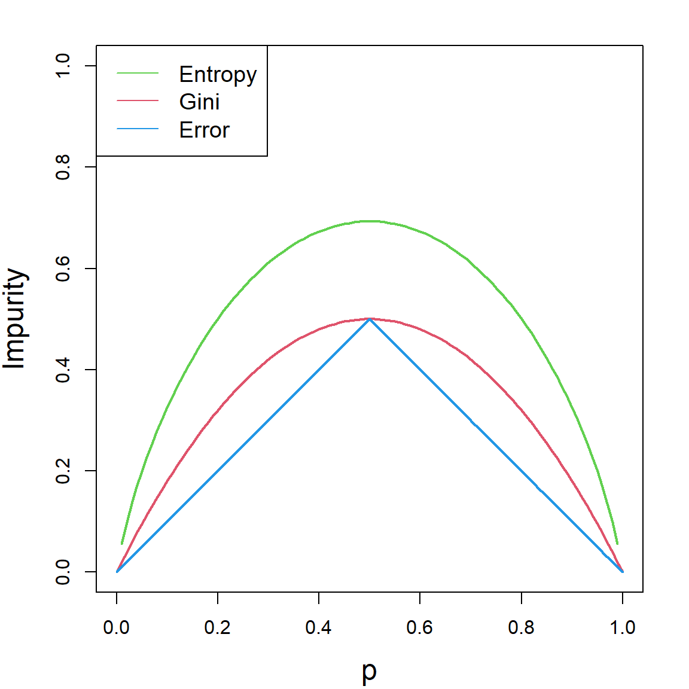

Chapter 20 Classification and Regression Trees
A tree model is very simple to fit and enjoys interpretability. It is also the core component of random forest and boosting. Both trees and random forests can be used for classification and regression problems, although trees are not ideal for regressions problems due to its large bias. There are two main stream of tree models, Classification and Regression Trees (CART, Breiman et al. (1984)) and C4.5 (Quinlan 1993), which is an improvement of the ID3 (Iterative Dichotomiser 3) algorithm. The main difference is to use binary or multiple splits and the criteria of the splitting rule. In fact the splitting rule criteria is probably the most essential part of a tree.
20.1 Example: Classification Tree
Let’s generate a model with nonlinear classification rule.
set.seed(1)
n = 500
x1 = runif(n, -1, 1)
x2 = runif(n, -1, 1)
y = rbinom(n, size = 1, prob = ifelse(x1^2 + x2^2 < 0.6, 0.9, 0.1))
par(mar=rep(2,4))
plot(x1, x2, col = ifelse(y == 1, "deepskyblue", "darkorange"), pch = 19)
symbols(0, 0, circles = sqrt(0.6), add = TRUE, inches = FALSE, cex = 2)
A classification tree model is recursively splitting the feature space such that eventually each region is dominated by one class. We will use rpart as an example to fit trees, which stands for recursively partitioning.
set.seed(1)
library(rpart)
rpart.fit = rpart(as.factor(y)~x1+x2, data = data.frame(x1, x2, y))
# the tree structure
par(mar=rep(0.5, 4))
plot(rpart.fit)
text(rpart.fit)
# if you want to peek into the tree
# note that we set cp = 0.041, which is a tuning parameter
# we will discuss this later
rpart.fit$cptable
## CP nsplit rel error xerror xstd
## 1 0.17040359 0 1.0000000 1.0000000 0.04984280
## 2 0.14798206 3 0.4843049 0.7264574 0.04692735
## 3 0.01121076 4 0.3363229 0.4484305 0.04010884
## 4 0.01000000 7 0.3004484 0.4035874 0.03852329
prune(rpart.fit, cp = 0.041)
## n= 500
##
## node), split, n, loss, yval, (yprob)
## * denotes terminal node
##
## 1) root 500 223 0 (0.55400000 0.44600000)
## 2) x2< -0.6444322 90 6 0 (0.93333333 0.06666667) *
## 3) x2>=-0.6444322 410 193 1 (0.47073171 0.52926829)
## 6) x1>=0.6941279 68 8 0 (0.88235294 0.11764706) *
## 7) x1< 0.6941279 342 133 1 (0.38888889 0.61111111)
## 14) x2>=0.7484327 53 7 0 (0.86792453 0.13207547) *
## 15) x2< 0.7484327 289 87 1 (0.30103806 0.69896194)
## 30) x1< -0.6903174 51 9 0 (0.82352941 0.17647059) *
## 31) x1>=-0.6903174 238 45 1 (0.18907563 0.81092437) *The model proceed with the following steps. Note that steps 5 and 6 may not be really beneficial (consider that we know the true model).

Alternatively, there are many other packages that can perform the same analysis. For example, the tree package. However, be careful that this package uses a different splitting rule by default If you want to match the result, use split = "gini". Note that this plot is very crowded because it will split until pretty much only one class in each terminal node. Hence, you can imaging that there will be a tuning parameter issue. We will discuss this later.
library(tree)
tree.fit = tree(as.factor(y)~x1+x2, data = data.frame(x1, x2, y), split = "gini")
plot(tree.fit)
text(tree.fit)
20.2 Splitting a Node
In a tree model, the splitting mechanism performs in the following way, which is just comparing all possible splits on all variables. For simplicity, we will assume that a binary splitting rule is used, i.e., we split the current node into to two child nodes, and apply the procedure recursively.
- At the current node, go through each variable to find the best cut-off point that splits the node.
- Compare all the best cut-off points across all variable and choose the best one to split the current node and then iterate.
So, what error criterion should we use to compare different cut-off points? There are three of them at least:
- Gini impurity (CART)
- Shannon entropy (C4.5)
- Mis-classification error
Gini impurity is used in CART, while ID3/C4.5 uses the Shannon entropy. These criteria have different effects than the mis-classifications error. They usually prefer more “pure” nodes, meaning that it is more likely to single out a set of pure class terminal node if we use Gini impurity and Shannon entropy. This is because their measures are nonlinear.
Suppose that we have a population (or a set of observations) with \(p_k\) proportion of class \(k\), for \(k = 1, \ldots, K\). Then, the Gini impurity is given by
\[ \text{Gini} = \sum_{k = 1}^K p_k (1 - p_k) = 1 - \sum_{k=1}^K p_k^2.\] The Shannon theory is defined as
\[- \sum_{k=1}^K p_k \log(p_k).\] And the classification error simply adds up all mis-classified portions if we predict the population into the most prevalent one:
\[ 1 - \underset{k = 1, \ldots, K}{\max} \,\, p_k\] The following plot shows all three quantities as a function of \(p\), when there are only two classes, i.e., \(K = 2\).

For each quantity, smaller value means that the node is more “pure”, hence, there is a higher certainty when we predict a new value. The idea of splitting a node is that, we want the two resulting child node to contain less variation. In other words, we want each child node to be as “pure” as possible. Hence, the idea is to calculate this error criterion both before and after the split and see what cut-off point gives us the best reduction of error. Of course, all of these quantities will be calculated based on the sample version, instead of the truth. For example, if we use the Gini impurity to compare different splits, we use the following quantity for an internal node \({\cal A}\):
\[\begin{align} \text{score}(j, c) = \text{Gini}({\cal A}) - \left( \frac{N_{{\cal A}_L}}{N_{{\cal A}}} \text{Gini}({\cal A}_L) + \frac{N_{{\cal A}_R}}{N_{{\cal A}}} \text{Gini}({\cal A}_R) \right). \end{align}\]
Here, \({\cal A}_L\) (left child node) and \({\cal A}_R\) (right child node) denote the two child nodes resulted from a potential split on the \(j\)th variable at a cut-off point \(c\), such that
\[{\cal A}_L = \{\mathbf{x}: \mathbf{x}\in {\cal A}, \, x_j \leq c\}\] and
\[{\cal A}_R = \{\mathbf{x}: \mathbf{x}\in {\cal A}, \, x_j > c\}.\] Then \(N_{\cal A}\), \(N_{{\cal A}_L}\), \(N_{{\cal A}_R}\) are the number of observations in these nodes, respectively. The implication of this is quite intuitive: \(\text{Gini}({\cal A})\) calculates the uncertainty of the entire node \({\cal A}\), while the second quantity is a summary of the uncertainty of the two potential child nodes. Hence a larger score indicates a better split, and we may choose the best index \(j\) and cut-off point \(c\) to proceed,
\[\underset{j \, , \, c}{\arg\max} \,\, \text{score}(j, c)\]
and then work on each child node separately using the same procedure.
20.3 Regression Trees
The basic procedure for a regression tree is pretty much the same as a classification tree, except that we will use a different way to evaluate how good a potential split is. Note that the variance is a simple quantity to describe the noise within a node, we can use
\[\begin{align} \text{score}(j, c) = \text{Var}({\cal A}) - \left( \frac{N_{{\cal A}_L}}{N_{{\cal A}}} \text{Var}({\cal A}_L) + \frac{N_{{\cal A}_R}}{N_{{\cal A}}} \text{Var}({\cal A}_R) \right). \end{align}\]
20.4 Predicting a Target Point
When we have a new target point \(\mathbf{x}_0\) to predict, the basic strategy is to “drop it down the tree”. This is simply starting from the root node and following the splitting rule to see which terminal node it ends up with. Note that a fitted tree will have a collection of terminal nodes, say, \(\{{\cal A}_1, {\cal A}_2, \ldots, {\cal A}_M\}\), then suppose \(\mathbf{x}_0\) falls into terminal node \({\cal A}_m\), we use \(\bar{y}_{{\cal A}_m}\), the average of original training data that falls into this node, as the prediction. The final prediction can be written as
\[\begin{align} \widehat{f}(\mathbf{x}_0) =& \sum_{m = 1}^M \bar{y}_{{\cal A}_m} \mathbf{1}\{\mathbf{x}_0 \in {\cal A}_m\} \\ =& \sum_{m = 1}^M \frac{\sum_{i=1}^n y_i \mathbf{1}\{\mathbf{x}_i \in {\cal A}_m\}}{\sum_{i=1}^n \mathbf{1}\{\mathbf{x}_i \in {\cal A}_m\}} \mathbf{1}\{\mathbf{x}_0 \in {\cal A}_m\}. \end{align}\]
20.5 Tuning a Tree Model
Tree tuning is essentially about when to stop splitting. Or we could look at this reversely by first fitting a very large tree, then see if we could remove some branches of a tree to make it simpler without sacrificing much accuracy. One approach is called the cost-complexity pruning. This is another penalized framework that we use the accuracy as the loss function, and use the tree-size as the penalty part for complexity. Formally, if we have any tree model \({\cal T}\), consider this can be written as
\[\begin{align} C_\alpha({\cal T}) =&~ \sum_{\text{all terminal nodes $t$ in ${\cal T}$}} N_t \cdot \text{Impurity}(t) + \alpha |{\cal T}| \nonumber \\ =&~ C({\cal T}) + \alpha |{\cal T}| \end{align}\]
Now, we can start with a very large tree, say, fitted until all pure terminal nodes. Call this tree as \({\cal T}_\text{max}\). We can then exhaust all its sub-trees by pruning any branches, and calculate this \(C(\cdot)\) function of the sub-tree. Then the tree that gives the smallest value will be our best tree.
But this can be computationally too expensive. Hence, one compromise, instead of trying all possible sub-trees, is to use the weakest-link cutting. This means that, we cut the branch (essentially a certain split) that displays the weakest banefit towards the \(C(\cdot)\) function. The procedure is the following:
- Look at an internal node \(t\) of \({\cal T}_\text{max}\), and denote the entire branch starting from \(t\) as \({\cal T}_t\)
- Compare: remove the entire branch (collapse \({\cal T}_t\) into a single terminal node) vs. keep \(T_t\). To do this, calculate \[\alpha \leq \frac{C(t) - C({\cal T}_t)}{|T_t| - 1}\] Note that \(|{\cal T}_t| - 1\) is the size difference between the two trees.
- Try all internal nodes \(t\), and cut the branch \(t\) that has the smallest value on the right hand side. This gives the smallest \(\alpha\) value to remove some branches. Then iterate the procedure based on this reduced tree.
Note that the \(\alpha\) values will get larger as we move more branches. Hence this produces a solution path. Now this is very similar to the Lasso solution path idea, and we could use cross-validation to select the best tuning. By default, the rpart function uses a 10-fold cross-validation. This can be controlled using the rpart.control() function and specify the xval argument. For details, please see the documentation. The following plot using plotcp() in the rpart package gives a visualization of the relative cross-validation error. It also produces a horizontal line (the dotted line). It suggests the lowest (plus certain variation) that we could achieve. Hence, we will select the best cp value (\(alpha\)) that is above this line. The way that this is constructed is similar to the lambda.1se choice in glmnet.

printcp(rpart.fit)
##
## Classification tree:
## rpart(formula = as.factor(y) ~ x1 + x2, data = data.frame(x1,
## x2, y))
##
## Variables actually used in tree construction:
## [1] x1 x2
##
## Root node error: 223/500 = 0.446
##
## n= 500
##
## CP nsplit rel error xerror xstd
## 1 0.170404 0 1.00000 1.00000 0.049843
## 2 0.147982 3 0.48430 0.72646 0.046927
## 3 0.011211 4 0.33632 0.44843 0.040109
## 4 0.010000 7 0.30045 0.40359 0.038523